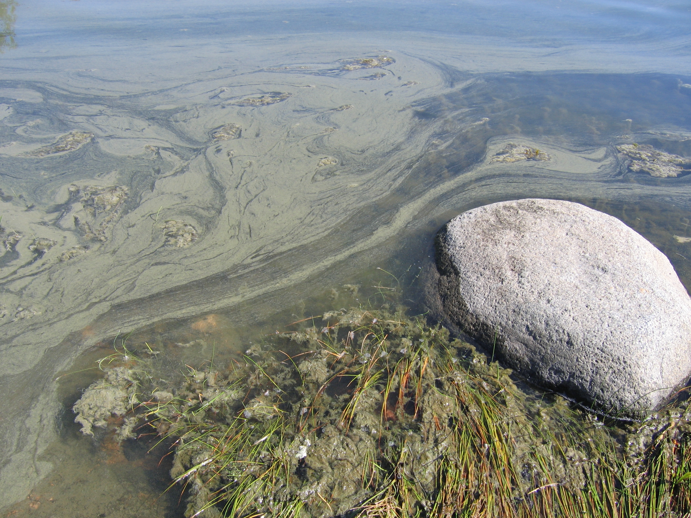

Ο Όμηρος και η Σύλβια είναι συμμαθητές και οι δύο είναι αφοσιωμένοι ψαράδες. Το περασμένο καλοκαίρι ξεκίνησαν μια εξόρμηση για ψάρεμα σε μια απόμερη λίμνη, αφού βαρέθηκαν να πηγαίνουν κάθε φορά για ψάρεμα στο ίδιο ποτάμι που ήταν κοντά στην πόλη τους. Όταν έφτασαν στον προορισμό τους, διαπίστωσαν ότι η λίμνη ήταν καταπράσινη αντί να έχει το γαλάζιο χρώμα που περίμεναν. Επίσης παρατήρησαν ότι οι τοπικές αρχές είχαν βάλει μια πινακίδα που έγραφε ότι απαγορευόταν το κολύμπι στη λίμνη λόγω ευτροφισμού και κινδύνου αλλαντίασης. Παρόλα αυτά, έβγαλαν τα καλάμια τους και προσπάθησαν να πιάσουν λούτσο και πέρκα. Χρησιμοποίησαν λαμπερά δολώματα που πάντα δούλευαν καλά στο ποτάμι στην πόλη τους. Ωστόσο, μετά από τρεις ώρες που περίμεναν υπομονετικά, δεν έπιασαν τίποτε ακόμη. Αφού έφαγαν το μεσημεριανό τους άρχισαν να χρησιμοποιούν ζυμάρι για δόλωμα, ελπίζοντας ότι μπορούσαν να πιάσουν κάποια μικρότερα είδη ψαριών. Όταν έφτασε η ώρα για να επιστρέψουν στο σπίτι ο κουβάς τους ήταν ακόμα άδειος. Έτσι, ενώ οι συνθήκες στη λίμνη ήταν τέτοιες που τα φύκια ευδοκιμούσαν, φάνηκε να μην υπήρχαν καθόλου ψάρια.

Τα φύκια ευδοκιμούν κοντά στην ακτή μετά από μια βδομάδα ζεστού καιρού. Λήψη φωτογραφίας στην Sipoo, Φιλανδία.
source: Wikipedia / Ronja Addams-Moring